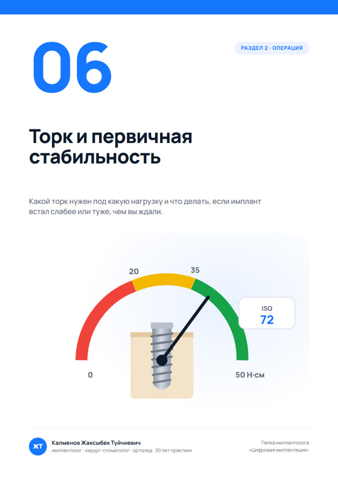

Три документа, о которых шла речь в ролике. Открывайте с телефона прямо у кресла или распечатайте и повесьте в операционной.
Открыть материалыPDF, формат A4. Нажмите «Открыть», чтобы посмотреть в браузере, или «Скачать», чтобы сохранить.
Чек-лист чтения КТ, шпаргалка по расстояниям, таблица выбора импланта, план первых 50 имплантов и другие материалы по цифровой имплантации.